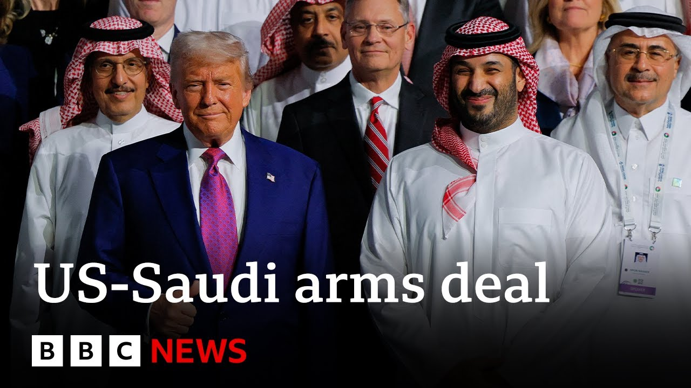

【美国与沙特签署1420亿美元军售协议 | BBC新闻】
Summary: The US and Saudi Arabia signed a $142 billion arms deal during President Trump's Middle East tour, including economic partnerships and AI investments, amid ceremonial pomp and discussions on regional politics and technology access.
摘要： 美国和沙特在特朗普总统中东之行期间签署了1420亿美元军售协议，包括经济合作和人工智能投资，期间举行了隆重仪式，并讨论了地区政治和技术准入问题。

⏱️ Estimated Reading Time: 10 min
Now to the Middle East because the United States and Saudi Arabia have signed a 142 billion arms deal on the first day of President Trump's tour of the Middle East.
现在转向中东，因为美国和沙特在特朗普总统中东之行的第一天签署了1420亿美元的军售协议。
His first major trip since he returned to the White House.
这是他重返白宫后的首次重要出访。
The president and the Saudi Crown Prince signed an economic partnership between their two countries.
总统和沙特王储签署了两国间的经济伙伴关系协议。
The US will provide warfighting equipment to Saudi Arabia who will in turn invest $20 billion in artificial intelligence in the US.
美国将向沙特提供作战装备，而沙特将向美国人工智能领域投资200亿美元。
Donald Trump is hoping to secure trade deals worth more than a trillion dollars during his 4-day trip, which also includes stops in Qatar and the United Arab Emirates.
唐纳德·特朗普希望在为期4天的访问中达成价值超过1万亿美元的贸易协议，此行还包括访问卡塔尔和阿拉伯联合酋长国。
Well, our chief international correspondent, Lee Ducet, is in Riyad for us.
我们的首席国际记者李·杜塞特正在利雅得为我们报道。
Well, so far on this first stop on President Trump's first official foreign visit, there's been a lot of pompin ceremony and as we've just been seeing, a lot of signing of those deals.
在特朗普总统首次正式外访的第一站，已经举行了大量隆重仪式，正如我们所见，签署了许多协议。
Deal making is uh one of the priorities for President Trump on this visit.
达成协议是特朗普总统此次访问的重点之一。
There's said to be many billions of investment in of Saudi money in the United States and sectors ranging from aerospace to artificial intelligence to energy.
据说沙特将在美国投资数百亿美元，涉及从航空航天到人工智能再到能源等多个领域。
And Saudi Arabia wants to get something too out of the United States.
沙特也希望从美国获得一些东西。
Access to its markets, advances to technology.
进入其市场，获得技术进展。
But of course, there's also great symbolism in this visit.
但当然，此次访问也具有重要的象征意义。
It's the second time that Riyad has been chosen for President Trump's first stop.
这是利雅得第二次被选为特朗普总统的首站。
So how much does it matter to the kingdom?
那么这对沙特王国有多重要？
We're joined here by Ali Shahabi who is a Saudi political analyst.
我们邀请了沙特政治分析师阿里·沙哈比加入我们。
Thank you for joining us Ali Shahabi twice being chosen for the honor of the first visit.
谢谢你加入我们，阿里·沙哈比，两次被选为首次访问的荣誉。
How much does that matter to the kingdom?
这对王国有多重要？
It matters.
这很重要。
Symbolism is important.
象征意义很重要。
Um you know packaging is important important and the US relationship is very important for the kingdom.
你知道包装很重要，与美国的关系对王国非常重要。
Uh so the fact that the US president chooses it the kingdom as his first stop twice is is historic really and I think it it shows the depth of the relationship that exists with America and also with President Trump.
美国总统两次选择王国作为首站确实是历史性的，我认为这表明了与美国以及特朗普总统关系的深度。
There's a very close relationship between the crown prince and the president and the relationship between the kingdom and America has gotten very close towards the end of the Biden administration.
王储与总统关系非常密切，王国与美国的关系在拜登政府末期变得非常紧密。
Um and it continued obviously into the Trump administration given that it had been very good with the Trump administration in round one so to speak.
显然，这种关系延续到了特朗普政府，因为第一轮与特朗普政府的关系非常好。
So what you're seeing now really is uh a manifestation of the strength of that relationship and an indicator of the number of issues that are being worked on uh you know in terms of in security in terms of economics in terms of technology and in terms of regional politics.
所以你现在看到的实际上是这种关系力量的体现，以及在安全、经济、技术和地区政治等多个领域正在解决的问题的指标。
Would it be too cynical to say that it's all about money?
说这一切都是为了钱会不会太愤世嫉俗？
It came after uh the crown prince Muhammad bin Salman made it clear that the kingdom was willing to invest $600 billion in the US economy and now that seems as President Trump says it's gone up to a trillion.
这是在王储穆罕默德·本·萨勒曼明确表示王国愿意向美国经济投资6000亿美元之后发生的，现在正如特朗普总统所说，这一数字似乎已上升到1万亿美元。
Well, I mean those are symbolic figures more than symbolic.
嗯，这些数字不仅仅是象征性的。
Well, they are symbolic because they're an accumulation of investments that have been planned for a while and are planned in the future, but they're also joint ventures.
它们是象征性的，因为它们是已经计划和未来计划的投资的累积，但它们也是合资企业。
uh and there's an element of joint venture investment in the kingdom.
王国也有合资企业投资的成分。
The kingdom is investing really in industries in America where it can have technology transfer where it can encourage those companies to come into the kingdom and operate uh where it can encourage them to offshore in into the kingdom.
王国实际上是在投资美国的产业，以获得技术转让，鼓励这些公司进入王国运营，并鼓励它们将业务转移到王国。
So it's really very interconnected.
所以这实际上是非常相互关联的。
It's not pure uh sort of portfolio investment or pure investment in America that has nothing to do with the kingdom's economy.
这不是纯粹的投资组合投资或与王国经济无关的纯粹对美国投资。
What are the high value items that are at the top of the crown prince list?
王储清单上的高价值项目是什么？
We've heard that they want access to sensitive technology that current American rules don't allow the kingdom access in AI.
我们听说他们希望获得敏感技术，而目前美国的规则不允许王国在人工智能领域获得这些技术。
There's a desire to have access to sensitive technology and we're getting good indications from the Americans that that will be allowed.
他们希望获得敏感技术，我们从美国人那里得到了很好的迹象，表明这将得到允许。
Obviously, there's nuclear technology which again are progressing very well.
显然，核技术进展也非常顺利。
Nothing was signed so far, but uh negotiations are ongoing and probably something will be signed towards the end of the year.
目前尚未签署任何协议，但谈判正在进行，可能在年底前签署一些协议。
uh military support, access to the latest in weaponry in America.
军事支持，获得美国最新武器。
Uh there was a hiatus in the early days of the of the Biden administration.
在拜登政府初期曾有过中断。
So there's a bit of a catch up there to replenish the stocks of the Saudi military and the and the Trump administration has been very supportive of that.
因此需要一些追赶以补充沙特军队的库存，而特朗普政府对此非常支持。
How much is the regional situation?
地区局势有多重要？
How much does that matter to Saudi leaders?
这对沙特领导人有多重要？
Will Muhammad bin Salman take this opportunity to press President Trump to do more?
穆罕默德·本·萨勒曼会借此机会敦促特朗普总统采取更多行动吗？
Well, he has been.
嗯，他已经在这样做了。
He has been.
他已经在这样做了。
I mean, he will take it personally.
我的意思是，他会亲自处理。
And Saudi officials have been pressing uh the American administration, you know, on opening up Gaza to to um aid, on taking off sanctions of from Syria.
沙特官员一直在敦促美国政府，你知道，开放加沙以提供援助，解除对叙利亚的制裁。
Um Saudi Arabia is also watching with interest the the nuclear negotiations.
沙特也在密切关注核谈判。
Unlike the Obama administration, uh this administration has kept Saudi Arabia in the loop uh and briefed them on how the negotiations are going.
与奥巴马政府不同，本届政府让沙特了解情况，并向他们通报谈判进展。
Interestingly, the Iranians are doing the same and also briefing Saudi Arabia.
有趣的是，伊朗也在做同样的事情，并向沙特通报情况。
So, it's it's a totally different environment now from the time of the JCPOA which was pulled as a surprise really on the countries of the Gulf.
所以，现在的环境与《联合全面行动计划》时期完全不同，当时该协议对海湾国家来说确实是个意外。
Uh so, regional politics are extremely important.
因此，地区政治极其重要。
America is a hedgeimon in the region and we want to retain, you know, President Trump has a tendency sometimes to get excited about things and then move on to the next subject and I think we want to keep him excited about the region, keep him involved and the fact that he came here um is a reassurance that he is interested in the region.
美国是该地区的霸权国家，我们希望保持，你知道，特朗普总统有时会对某些事情感到兴奋，然后转向下一个话题，我认为我们希望让他对该地区保持兴奋，让他参与其中，他来到这里的事实是对他感兴趣的一种保证。
stark contrast to the days when President Biden, many other world leaders talked about the Saudi kingdom as a pariah state after the murder of the Saudi journalist Jamal Kosoji.
与拜登总统和其他许多世界领导人在沙特记者贾马尔·卡舒吉遇害后将沙特王国称为贱民国家的日子形成鲜明对比。
Yes.
是的。
Well, I think President Biden ended up eating up those words uh when he came to the kingdom two years after saying that.
嗯，我认为拜登总统在说了那些话两年后来到王国时最终收回了那些话。
So that's you would have raised it the issue though.
所以你会提出这个问题。
Well, he may have raised the issue, but I mean he end up he ended up eating those words frankly.
嗯，他可能提出了这个问题，但我的意思是他最终坦率地收回了那些话。
uh and the relationship ended up getting much better towards the end of his term.
在他任期结束时，两国关系最终变得好多了。
Alishabi, thank you very much joining us here in Riab.
阿里沙比，非常感谢你在利雅得加入我们。
A measure of uh the changing times and it is a time where it is these wealthiest, most ambitious Gulf states, Saudi Arabia, Qatar, United Arab Emirates want to be sitting at the top table and want to be sitting next to President Trump.
这是时代变化的标志，这是一个最富有、最有雄心的海湾国家沙特、卡塔尔、阿联酋希望坐在主桌并希望坐在特朗普总统旁边的时代。